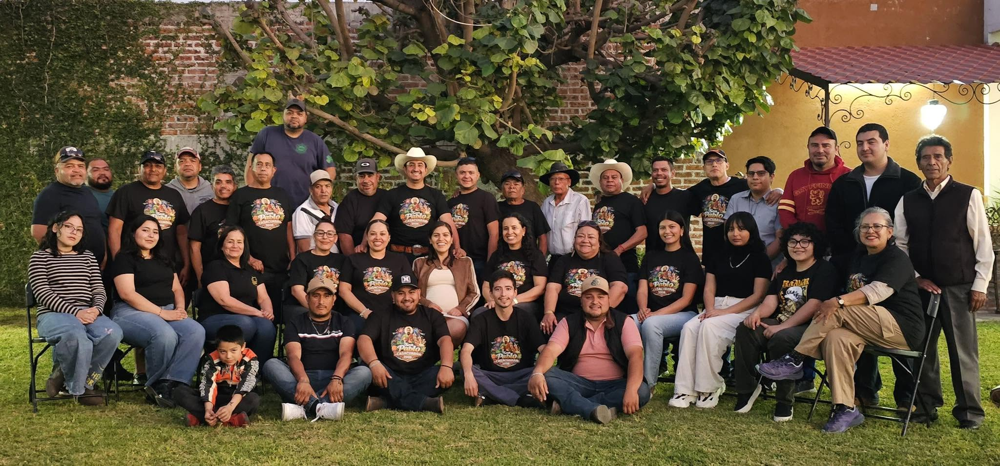

Reconstruyendo Casacuarán
Participación vecinal, memoria y obras colectivas como un acto cívico cotidiano para toda nuestra comunidad
San Pablo Casacuarán • Yuriria, Gto.
Un espacio abierto para documentar el esfuerzo de nuestras familias, cuidar lo común y mantener cerca a quienes están lejos.
En la ladera frente a la laguna de Yuriria, la vida pública de Casacuarán se sostiene gracias a las faenas voluntarias, la organización entre barrios y el respaldo constante de nuestros paisanos. Aquí reunimos avances de obras, convocatorias de salud y crónicas de nuestra tierra sin intermediarios.

Memoria de trabajo y transparencia • 2024–2026
Bitácora Histórica de Actividades
Registro cronológico de obras, faenas, gestiones y eventos comunitarios. Las actividades de 2025 documentadas por secuencia histórica indican mes y año.
| Periodo / Fecha | Actividad o Logro | Área | Tipo | Ficha |
|---|
Memoria e identidad
Catziatsiariatzi: en la cuesta de la montaña
El antiguo vocablo purépecha describe la geografía exacta de San Pablo Casacuarán, asentado entre el cerro y la cuenca lacustre de Yuriria. Tierra de oficio agrícola, cantera, tejido artesanal y tradición familiar que ha sabido conservar su cohesión a lo largo de más de cuatro siglos.
Formalizada su fundación congregacional en febrero de 1582 vinculada a los agustinos de San Pablo de Yuriria, la parroquia y su plaza siguen siendo el punto de reencuentro cada 25 de enero durante las fiestas patronales en honor a San Pablo Apóstol.
Memoria histórica en revisión y enriquecimiento continuo junto a las familias y cronistas de San Pablo Casacuarán.
Vínculo binacional
Comunidad Migrante
Las familias de Casacuarán radicadas en Estados Unidos sostienen buena parte de las mejoras colectivas del pueblo. Mostrar con claridad cada avance y cada obra concluida honra su confianza y acorta la distancia.
Trabajo común
Faenas Vecinales
Desde la poda y pintura del Jardín Principal hasta la limpieza de accesos y espacios deportivos, la faena voluntaria mantiene vivo el sentido de pertenencia entre generaciones.
Atención y servicios
Directorio Comunitario
Atención ciudadana
Delegación Municipal
Constancias locales, trámites vecinales, coordinación de faenas y enlace directo con las familias de Casacuarán.
Encargado y enlace: Hernando Posadas
+52 1 224 508 0884Servicios básicos
Agua Potable y Limpia
Reportes de fugas en la red hidráulica, operación de pozos y ruta ordinaria de recolección de residuos.
Ver intervenciones recientesCanal abierto
Redes Comunitarias
Cobertura fotográfica de actividades, transmisiones en vivo de eventos culturales y avisos inmediatos.
Visitar Reconstruyendo Casacuarán ↗